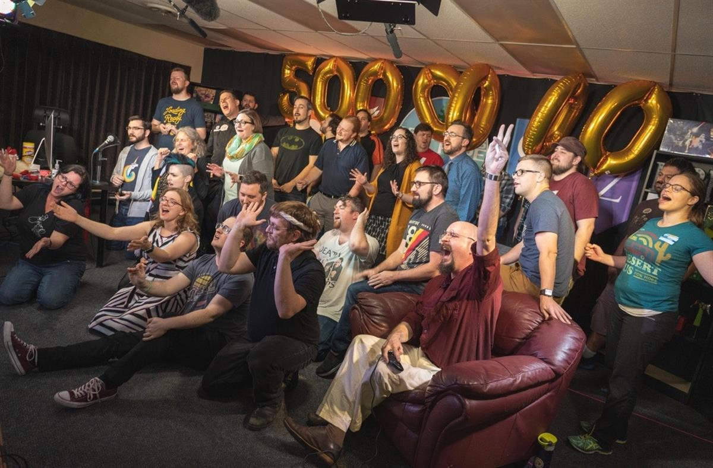
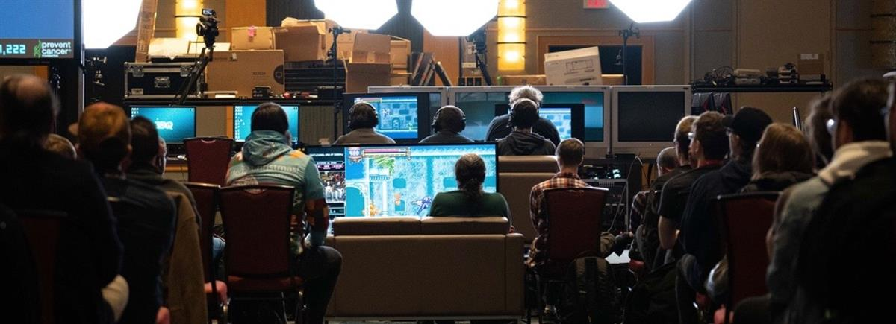

Gamers play the endurance driving game Desert Bus as part of Desert Bus for Hope, which launched in 2007 and has raised over $5m for the children’s hospital charity Child’s Play. Photograph: Kolin Toney/Desert Bus for Hope
Gamers play the endurance driving game Desert Bus as part of Desert Bus for Hope, which launched in 2007 and has raised over $5m for the children’s hospital charity Child’s Play. Photograph: Kolin Toney/Desert Bus for Hope
There has been a quiet revolution in the world of philanthropy over recent years, driven by the fact that sitting down to play a video game until you fall over from sleep deprivation can raise thousands or even millions of dollars for charity – as long as you do it live on the internet.
“The impact is big and getting bigger,” says Jeremy Wells, fundraising events manager for Médecins Sans Frontières, a popular partner for charity streams. “Summer Games Done Quick is our biggest fundraiser of the year – it brought in $2.1m last year out of $4.7m for our whole events program.”
Charity streaming is similar to old-school telethons or donation drives: streamers broadcast themselves playing games live on the internet while urging viewers to donate to charity. Games Done Quick – a twice-a-year multiday showcase where speedrunners utilise technical knowledge, well-honed skills and physics-defying glitches to race through games as fast as possible – is one of the scene’s biggest events. But it’s far from the only charity stream out there. Streaming platform Twitch estimates between 2012 and 2017, more than $75m was raised for various charities on its service alone.
Possibly the first ever charity live stream was Desert Bus for Hope, which happened in November 2007 (although record-keeping from the early days of streaming is extremely spotty).
Desert Bus is an endurance grind for a team playing the world’s most tedious minigame – driving a slightly broken bus on a boring, real-time eight-hour virtual trip from Tucson to Las Vegas and back – for as long as viewers keep donating. With events held every year since that first stream, it has raised more than $5m for the children’s hospital charity Child’s Play.
“We named it the ‘first annual Desert Bus for Hope’ as a joke,” says James Turner, one of the members from comedy troupe and Desert Bus founders LoadingReadyRun. “We had zero intention of ever doing it again … but it took off!”

Members of LoadingReadyRun celebrate hitting the $5m mark raised over the lifetime of Desert Bus for Hope. Photograph: Kolin Toney @ specialkolin.com/Desert Bus for Hope
“Ustream was the service we used that first few years of Desert Bus,” explains Turner. “There was no overlay, no graphics … back then, we would run two separate streams: one camera pointed at us, and one of the actual game.”
In the days before mass adoption of Twitter or tools such as Skype or FaceTime, links were shared through blogs and websites while audience interaction was through internet relay chat clients or through actual phone calls held up to a microphone. That first year, they streamed for more than four days straight and raised $22,000.
Today, like other juggernaut streaming events, Desert Bus has turned into a large-scale production with schedules and volunteers. But the barrier to entry for streaming – and charity streaming in particular – has lowered dramatically: an internet connection and a decent PC is usually enough for just about anyone to stream online. Platforms, too, have jumped on board; donation handlers such as Tiltify or GoFundMe offer receipts and money tracking, while broadcasters such as YouTube Giving, Facebook Live or Twitch integrate metrics, flashy graphics and donation buttons straight into the show. While mega-streams such as Games Done Quick and, more recently, Hbomberguy’s star-studded celebrity stream for trans youth tend to attract the most cash and attention, donations raised by smaller streams with viewers in the hundreds or even dozens still add up.
“Sometimes it’s just one person who streams a little bit, and their friends watch and donate some,” says Wells. “It’s very grassroots, very reactive.”
Live streaming’s closest ancestors include telethons like the Jerry Lewis MDA Labor Day marathons or PBS pledge drives. “Certainly in all our heads that was an inspiration,” says Turner. “That was something we grew up with, and we took that formula and put it on the internet.”
“It’s a show for a cause,” notes Wells. “It’s bringing people together under one activity, using modern tech, but with the same old methodology.”
Some charity organisations such as Extra Life keep leaderboards, encouraging different groups to tap their fanbases and compete for rankings. Other streams set donation goals which, if reached, will require the streamer to do something – often something difficult, boring, embarrassing or gross.
Desert Bus operates on similar principles: the first hour of virtual driving costs $1, but the amount required for the next hour increases exponentially by 7% every hour. Last year Desert Bus ran for 160 hours, meaning the last few hours required nearly a million dollars in donations each. “We knew we needed that built-in escape hatch so that we couldn’t just be there forever,” laughs Turner.
Charities see a range of benefits to this “geek philanthropy” (aside from the revenue), not least of which is exposure to a wider audience. “The Harry Potter association was doing some fundraisers for Doctors Without Borders. My Little Pony conventions, too,” says Wells. “I give Games Done Quick credit for getting us on board and making us realise that this was something to look for and develop in the future.”

Multiple speedrunners run live streams at Awesome Games Done Quick in June 2018. Photograph: Games Done Quick
“Our average donor, historically, is in their mid-60s,” Wells adds. “And the average streamer is not. It’s still considered a new channel to engage people – people who aren’t in that world, who haven’t watched or heard of Twitchbefore, they really don’t comprehend it until they can see it happen.”
Retention is a challenge for charities, with donors less likely to sign up for recurring donations. “But I see people every year giving their annual gift at Summer Games Done Quick, and that’s recurring,” says Wells. “Sometimes we think that we need to move people into the channels that we’re comfortable with [like direct mail or telephone]. But this channel is fine; we just have to develop it to be more robust.”
Streamers, too, benefit from associations with charity, as with any sponsor, corporate or otherwise. Charity streaming has become a part of PR campaigns for upcoming or already popular games, while individual streamers often find it an avenue for major profile boosts or even a way to deflect criticism. Controversial streamer Felix “PewDiePie” Kjellberg, for example, has raised substantial amounts through live streams for various charities including Save the Children and the HIV/Aids support organisation (RED).
“If someone’s going to do a stream, raise some money and support our work, that’s fabulous,” says Wells. “But if we’re working directly with someone, we try and keep mature-rated games off the board. And we ask that people keep the stream decent – though people can interpret that in different ways.”
MSF is also working to incorporate and apply the lessons learned from streaming to other aspects of fundraising. “We’re about to publish a streaming toolkit that will help with overlays and content and donation alerts and infographics,” says Wells. “But we’re also reaching out to our traditional peer-to-peer fundraisers to try and add a streaming element.
“If you’ve got a kid’s charity concert, for instance, they can turn on Facebook Live and raise money with the grandparents who are 2,000 miles away,” he explains. “It really opens up fundraising and streaming to a lot of different crowds.”
Turner, meanwhile, is glad to have been there at the start of it all. “It’s the thing that I am most proud of, of anything that I’ve done in my life, and I think that’s true for pretty much anybody else on the team,” he says. “I’m certainly not going to sit here and say every single charity marathon exists because we started Desert Bus – this was an idea that was going to happen regardless, that was just where technology was taking us.
“But knowing that we played even a little bit of a small part feels really good.